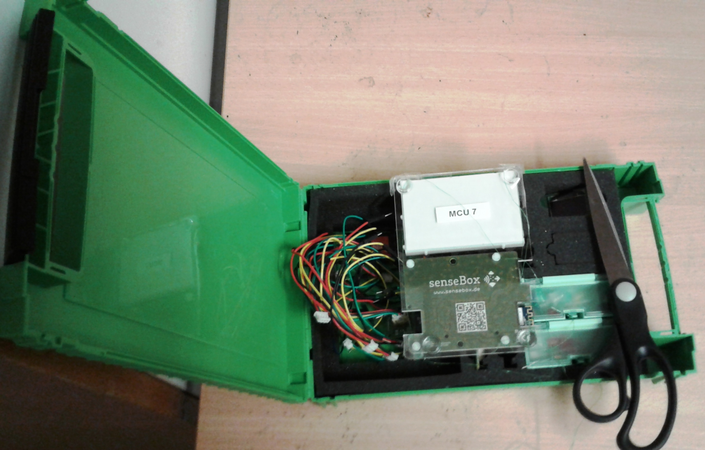
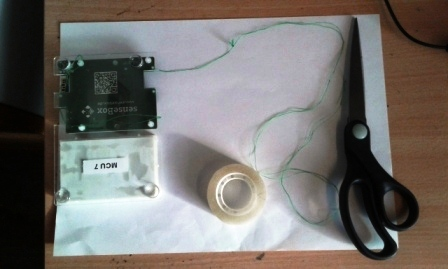
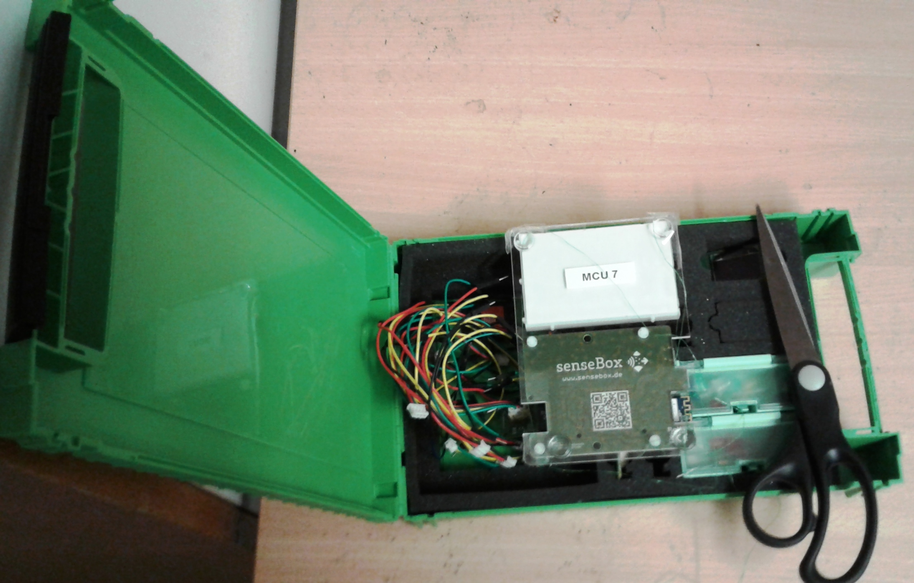
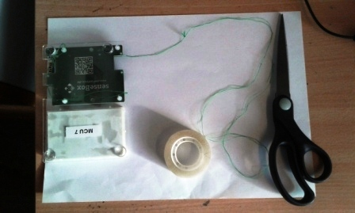

Experiment
Objective
To Measure the pendulum´s acceleration using Accelerometer
Apparatus:
Sensebox tool with MCU (Accelerometer sensor) as weight and string,pendulum hanger,
stopwatch, and meter stick(ruler), scissor ,Adhesive tape
 



Instruction
Theoretically:
A simple pendulum is one which can be considered to be a point mass suspended
from a string or rod of negligible mass.
For Length L and Period of oscillation T
be related with Equation
T = 2√L/g ; g = 4 √2 L/T2
the average acceleration of gravity and place the result in the proper table.
Compare this experimental value of g with the accepted value of 9.80 m/s and
acceleration value from Accelerometer ( MCU sensor value).
Error Analysis: % error = (gavg m/s 2 - 9.80m/s 2 / 9.80 m/s 2 ) x 100 %
How it works?:
As the Pendulum swing freely from different position and it will have some acceleration
in different direction measured while swining and visualazied
QUESTIONS :
Result:- Acceleration Measurenment from Sensor:(X,Y,Z)
| X | Y | Z | a average | %Error |
|---|---|---|---|---|
| 2.9 | 3.89 | 9.5 | 5.43 | |
| 3.0 | 3.19 | 9.7 | 5.29 | |
| 2.95 | 3.91 | 9.9 | 5.59 | |
| 3.0 | 4.99 | 10.1 | 6.03 | |
| 3.5 | 5.71 | 10.5 | 6.57 |
MCU Pendulum: